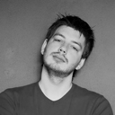

Recent blog posts
{% if site.posts == empty %}
There are no posts yet. Please check back later.
{% else %}
{% for post in site.posts %}
- {{ post.date | date_to_string }} {{post.title}}
{% endfor %}
{% endif %}
More about Arjan van der Gaag

I’m a twentysomething web developer and historian from the Netherlands. My hobbies include photography, cooking, music and snooker. I currently live in Veenendaal, the Netherlands. You can contact me at arjan@arjanvandergaag.nl.